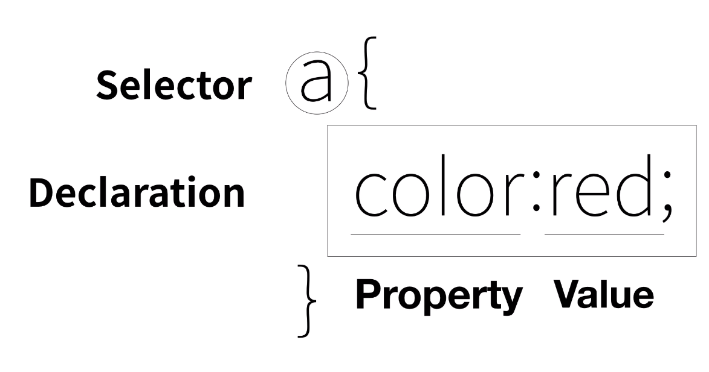
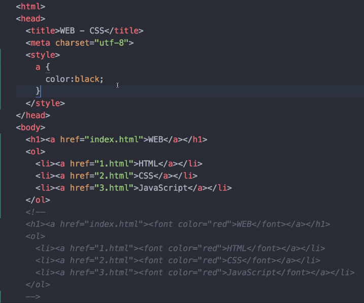

Cascading Style Sheets (CSS) is a style sheet language used for describing the presentation of a document written in a markup language. [1] Although most often used to set the visual style of web pages and user interfaces written in HTML and XHTML, the language can be applied to any XML document, including plain XML, SVG and XUL, and is applicable to rendering in speech, or on other media. Along with HTML and JavaScript, CSS is a cornerstone technology used by most websites to create visually engaging webpages, user interfaces for web applications, and user interfaces for many mobile applications.
CSS(Cascading Style Sheet)는 마크업 언어로 작성된 문서의 표시를 설명하는 데 사용되는 스타일 시트 언어입니다. [1] HTML 및 XHTML로 작성된 웹 페이지 및 사용자 인터페이스의 시각적 스타일을 설정하는 데 가장 자주 사용되지만 일반 XML, SVG 및 XUL을 비롯한 모든 XML 문서에 해당 언어를 적용할 수 있으며, 다른 렌더링에 적용됩니다. HTML 및 JavaScript와 함께, CSS는 대부분의 웹 사이트에서 시각적으로 매력적인 웹 페이지, 웹 애플리케이션용 사용자 인터페이스 및 많은 모바일 애플리케이션을 위한 사용자 인터페이스를 만드는 데 사용되는 기본 기술입니다.
selector
declaration
property
value
https://www.w3schools.com/cssref/css_selectors.asp
css selector Reference
css?
css color?